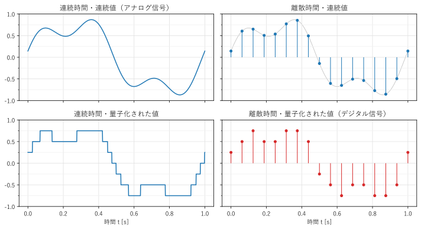
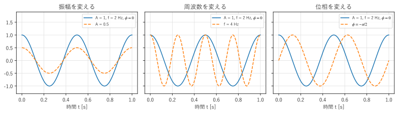
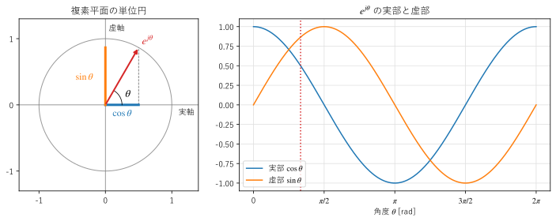

第 1 章 信号と数学的準備
この章では、本書で扱う「信号」とは何かを説明し、フーリエ解析の主役である正弦波と、それを扱うための道具である複素数、オイラーの公式、内積と直交性を準備する。
信号とは
時間とともに変化する量を、信号という。マイクロフォンが出力する電圧、加速度センサーで測った振動、心電図、株価の推移などは、いずれも信号である。画像のように、位置によって変化する量も信号として扱える。
信号は、時間の扱い方と値の扱い方によって、次のように分類できる（図 1）。
時間も値も連続な信号をアナログ信号、時間が離散で値も量子化された信号をデジタル信号という。計算機が直接扱えるのはデジタル信号だけである。

図 1 信号の 4 つの分類
現実の多くの信号はアナログ信号である。これを計算機で処理するには、一定の時間間隔で値を取り出し（標本化）、値を量子化して、デジタル信号に変換する。この変換を A/D 変換（analog-to-digital conversion）といい、逆にデジタル信号からアナログ信号を作る変換を D/A 変換という。デジタル信号処理の典型的な流れは、図 2 のとおりである。標本化と量子化は第 4 章で詳しく説明する。
図 2 デジタル信号処理の典型的な流れ
信号をデジタルで処理する利点は、次のとおりである。
同じ入力に対して、いつでも同じ結果が得られる（部品のばらつきや温度による変化がない）。
処理の内容をプログラムの変更だけで切り替えられる。
アナログ回路では実現が難しい処理（例えば、位相のずれがまったくないフィルタや、長い時間のデータを蓄えてから行う処理）ができる。
一方で、標本化と量子化によって情報が失われる可能性がある。どのような条件なら失われないのかを明らかにすることも、本書の大きなテーマの 1 つである。
正弦波
フーリエ解析の主役は正弦波である。本書では、\(\sin\) と \(\cos\) の波形をまとめて正弦波と呼び、次の形で表す。
各記号の意味は次のとおりである（図 3）。
名前 |
記号 |
意味 |
|---|---|---|
\(A\) |
波の大きさ（\(A \ge 0\)） |
|
\(f\) |
1 秒あたりの振動の回数。単位は Hz |
|
周期 |
\(T = 1/f\) |
1 回の振動にかかる時間。単位は s |
\(\omega = 2\pi f\) |
1 秒あたりに進む角度。単位は rad/s |
|
\(\phi\) |
時刻 \(t = 0\) における角度。波形の時間方向のずれを表す |

図 3 正弦波の振幅、周波数、位相を変えた波形（青の実線が元の波形）
\(\sin\) は \(\cos\) の位相を \(\pi/2\) ずらしたもの（\(\sin\theta = \cos(\theta - \pi/2)\)）なので、上の形ですべての正弦波を表せる。また、加法定理を使うと
と書き直せる。つまり、同じ周波数の正弦波は、\(\cos\) と \(\sin\) の 2 つの成分の和で表せる。この事実は、第 2 章のフーリエ級数で使う。
正弦波が特別に重要なのは、次の 2 つの理由による。
ばねと質量の振動、LC 回路の電気振動、音叉の音など、自然界の多くの振動は正弦波になる。
第 5 章で説明する線形時不変システム（フィルタ、回路、伝送路など）に正弦波を入力すると、出力は振幅と位相が変わるだけで、周波数が同じ正弦波になる。そのため、信号を正弦波に分解できれば、システムの出力は「各周波数の成分の振幅と位相がどう変わるか」だけで計算できる。
後者がフーリエ解析を信号処理で使う最大の理由である。
複素数とオイラーの公式
正弦波の計算は、複素数を使うと見通しがよくなる。ここで、必要な範囲を復習する。
複素数 \(z\) は、実数 \(a, b\) と虚数単位 \(j\)（\(j^2 = -1\)）を使って \(z = a + jb\) と表す。\(a\) を実部（\(\mathrm{Re}\,z\)）、\(b\) を虚部（\(\mathrm{Im}\,z\)）という。複素数は、横軸を実部、縦軸を虚部とする平面（複素平面）の上の点として表せる。原点からの距離 \(|z| = \sqrt{a^2 + b^2}\) を絶対値、実軸の正の向きからの角度 \(\arg z\) を偏角という。\(z = a + jb\) に対して \(z^* = a - jb\) を共役複素数という。\(zz^* = |z|^2\) が成り立つ。
指数関数と三角関数を結び付けるのが、次のオイラーの公式である。
\(e^{j\theta}\) は、複素平面の単位円の上で、角度 \(\theta\) の位置にある点を表す（図 4）。その実部が \(\cos\theta\)、虚部が \(\sin\theta\) である。

図 4 単位円の上の点 \(e^{j\theta}\)（左）と、その実部と虚部（右）
オイラーの公式を使うと、絶対値が \(r\)、偏角が \(\theta\) の複素数は \(z = re^{j\theta}\) と表せる。これを極形式という。極形式の積は
となり、「絶対値は掛け算、偏角は足し算」になる。特に、\(e^{j\theta}\) を掛けることは、複素平面で角度 \(\theta\) だけ回転することを意味する。
また、式 (1) と、\(\theta\) を \(-\theta\) に置き換えた式 \(e^{-j\theta} = \cos\theta - j\sin\theta\) を足したり引いたりすると、
が得られる。三角関数を指数関数で表せるので、三角関数の積や微分・積分の計算が、指数法則だけで済むようになる。例えば、\(\frac{d}{d\theta} e^{j\theta} = je^{j\theta}\) であり、微分は「\(j\) を掛けること」、つまり \(\pi/2\) の回転になる。
Python では、複素数を 1 + 2j のように書く。NumPy の関数は複素数の配列も扱える。
1import numpy as np
2
3theta = np.pi / 3
4z = np.exp(1j * theta) # e^{j theta}
5print(z) # (0.5000000000000001+0.8660254037844386j)
6print(z.real, z.imag) # 実部と虚部
7print(np.abs(z), np.angle(z)) # 絶対値 1.0 と偏角 1.047...（= pi/3）
8print(np.conj(z)) # 共役複素数
複素正弦波
オイラーの公式で \(\theta = 2\pi f t\) とした
を複素正弦波という。複素正弦波は、複素平面の単位円の上を、1 秒あたり \(f\) 回の速さで反時計回りに回る点を表す。\(f\) が負のときは時計回りに回る。
式 (2) を使うと、実数の正弦波は、反対向きに回る 2 つの複素正弦波の和で表せる。
右辺の第 2 項は、周波数が \(-f\) の複素正弦波である。フーリエ解析では、このように実数の正弦波を「周波数 \(f\) と \(-f\) の成分の組」として扱う。負の周波数は、物理的な振動の速さが負という意味ではなく、回転の向きを表す数学的な表現である。実数の信号では、\(f\) の成分と \(-f\) の成分が互いに共役複素数（\(\frac{A}{2}e^{j\phi}\) と \(\frac{A}{2}e^{-j\phi}\)）になる。
式 (3) の係数 \(\frac{A}{2}e^{j\phi}\) は、1 つの複素数で振幅と位相の両方を表している。このように振幅と位相をまとめた複素数をフェーザ（phasor）といい、交流回路の計算でも使われる。
内積と直交性
フーリエ解析の考え方は、ベクトルの分解と同じ構造をもつ。この節では、その構造を説明する。
2 次元の平面で、互いに直交する単位ベクトル \(\boldsymbol{e}_1, \boldsymbol{e}_2\) を使うと、任意のベクトル \(\boldsymbol{v}\) は
と分解できる。係数 \(c_i\) は、\(\boldsymbol{v}\) と \(\boldsymbol{e}_i\) の内積で求められる。両辺と \(\boldsymbol{e}_1\) の内積を取ると、\(\langle \boldsymbol{e}_2, \boldsymbol{e}_1 \rangle = 0\) なので \(c_2\) の項が消え、\(c_1\) だけが残るからである。\(N\) 次元でも同じで、互いに直交する \(N\) 本のベクトルがあれば、任意のベクトルの成分は、内積を 1 回ずつ計算するだけで求められる。
成分が複素数のベクトル \(\boldsymbol{u} = (u_0, \ldots, u_{N-1})\)、\(\boldsymbol{v} = (v_0, \ldots, v_{N-1})\) の内積は、次のように定義する。
\(\boldsymbol{v}\) の側の成分を共役複素数にするのは、\(\langle \boldsymbol{v}, \boldsymbol{v} \rangle = \sum |v_n|^2\) が実数になり、ベクトルの長さの 2 乗を表すようにするためである。
この考え方は関数にも拡張できる。区間 \([0, T]\) で定義された 2 つの関数 \(x(t), y(t)\) の内積を
と定義する。ベクトルの成分の和 \(\sum_n\) が、積分 \(\int dt\) に置き換わっただけである。この内積が 0 のとき、2 つの関数は直交するという。
第 2 章で示すように、周波数が基本周波数の整数倍の正弦波は互いに直交する。したがって、周期的な信号を正弦波の和に分解するときの各成分の大きさは、信号と各正弦波の内積で求められる。これがフーリエ級数の基本的な考え方である。フーリエ解析とは、「正弦波という直交する基底で信号を表し直すこと」だといえる。
まとめ
信号は、時間が連続か離散か、値が連続か量子化されているかで分類できる。計算機が扱うのはデジタル信号である。
正弦波 \(A\cos(2\pi f t + \phi)\) は、振幅、周波数、位相の 3 つで決まる。
オイラーの公式 \(e^{j\theta} = \cos\theta + j\sin\theta\) により、正弦波を複素指数関数で表せる。実数の正弦波は、周波数 \(f\) と \(-f\) の複素正弦波の和である。
直交する基底を使うと、各成分の大きさは内積で求められる。フーリエ解析は、信号を正弦波という直交基底で表し直すことである。